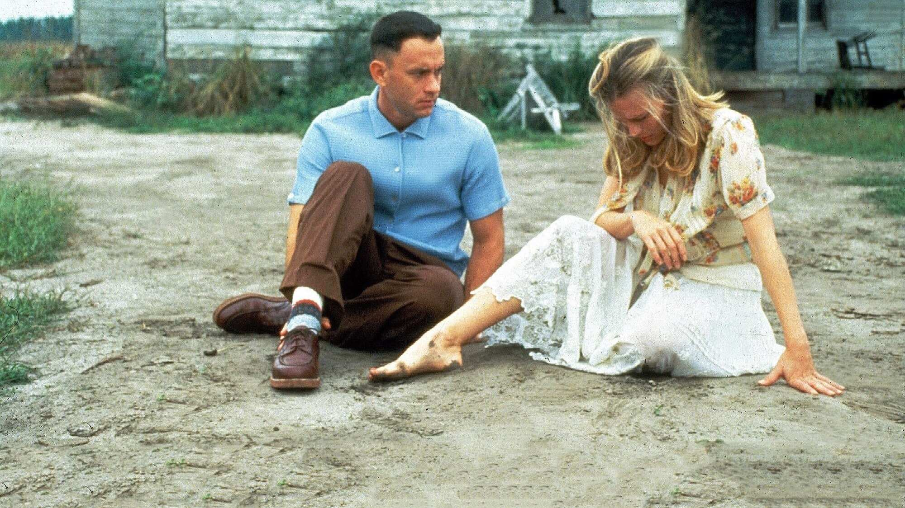
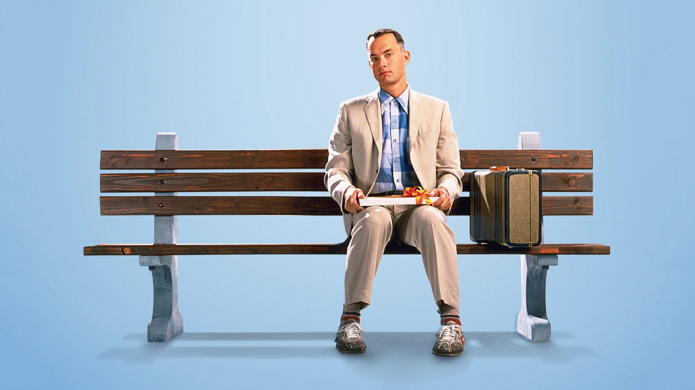
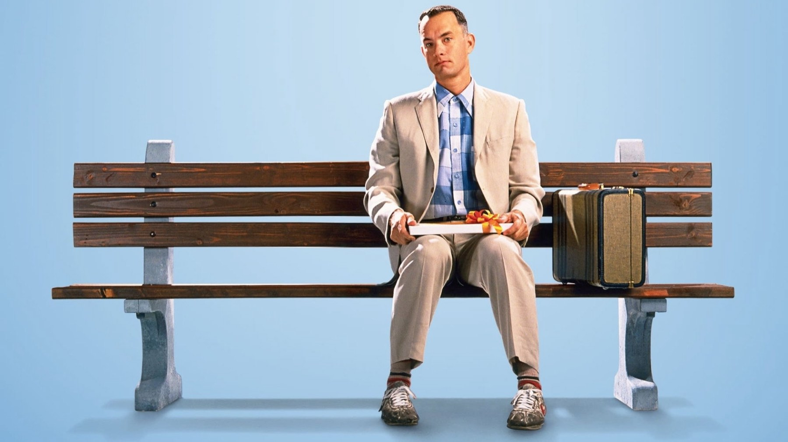

Forrest Gump (1994): ancora un capolavoro?
Sei Oscar, 678 milioni di dollari e un attore che rinunciò al cachet: cosa regge e cosa no del film di Zemeckis, trent'anni dopo
Nel 1994 un film su un uomo semplice che attraversa trent'anni di storia americana costò 55 milioni di dollari e ne incassò nel mondo circa 678, quindi più di dodici volte tanto; quell'anno lo superò solo Il re leone. Oggi Forrest Gump ha più di trent'anni e un posto fisso nelle classifiche dei film amati. Allora la domanda vera è se meriti ancora quel posto, o se viva invece di una fama che si autoalimenta.
Un attore che rinunciò allo stipendio
Il film nasce dal romanzo di Winston Groom del 1986, adattato da Eric Roth per la regia di Robert Zemeckis. La parte fu offerta prima a John Travolta, che rifiutò; poi furono considerati anche Bill Murray e Chevy Chase, oltre a Matthew Broderick. Tom Hanks invece accettò dopo circa un'ora e mezza di lettura della sceneggiatura, e per farlo rinunciò a Le ali della libertà. Al posto di un compenso fisso scelse una percentuale sugli incassi, quindi ne ricavò 40 milioni di dollari: una cifra enorme per un attore che non era ancora la star che sarebbe diventata. Robin Wright ottenne la parte di Jenny perché Jodie Foster aveva detto no.
Le riprese principali si svolsero da agosto a dicembre 1993, in diversi stati americani, con tappe a Savannah (Georgia) e a Monument Valley, fino al faro di Marshall Point nel Maine. Però è tra quelle tappe che nasce una delle immagini più riconosciute del cinema degli anni Novanta: l'uomo che corre da una costa all'altra con la barba lunga, seguito da una piccola folla.

Il trucco che nessuno vede
La parte più ammirevole, rivedendolo, è tecnica, perché il team di Industrial Light & Magic guidato da Ken Ralston inserì Hanks nei filmati d'archivio accanto a presidenti e personaggi reali con chroma key e morphing, oltre a deformazioni dell'immagine e rotoscopio. Nel dicembre 2011 la Library of Congress ha scelto il film per il National Film Registry. Gary Sinise, il tenente Dan, ha le gambe cancellate al computer: aveva le gambe fasciate di tessuto blu, e il lavoro di cancellazione fu fatto fotogramma per fotogramma. Nel 1994 era una novità, ma oggi nessuno la nota, ed è il complimento migliore che si possa fare a un effetto.
Anche il lavoro sugli attori regge benissimo. Hanks fa di Forrest un uomo che non finge niente, e per questo la sua voce monotona ci tiene incollati per due ore e un quarto. Sinise invece dà al tenente Dan l'unica rabbia vera del film. Sally Field, nei panni della madre, ha pochissime scene, però le usa tutte.
Cosa è stato detto subito, e cosa dopo
L'accoglienza fu quasi unanime tra il pubblico: il film ottenne la rara A+ del CinemaScore. Tra i critici invece le opinioni furono più divise. Roger Ebert lo definì «un film magico», mentre Anthony Lane, sul New Yorker, lo trovò «caloroso» e «saggio», ma anche «sfiancante da morire». A ottobre 2026 Rotten Tomatoes registra il 75% di recensioni positive e Metacritic un punteggio di 82 su 100. Alla cerimonia del marzo 1995 vinse sei Oscar, fra cui quello per il miglior film e quello a Hanks come attore protagonista; gli altri premiarono la regia e la sceneggiatura non originale, poi il montaggio e gli effetti speciali. Nella classifica degli incassi del 1994 fu secondo, dietro soltanto al film Disney. Il suo weekend d'esordio negli Stati Uniti, con 24,45 milioni di dollari in 1.595 sale, fu però il più grande mai ottenuto da un titolo Paramount fuori dalle festività.
È proprio Le ali della libertà il metro con cui la storia ha poi giudicato quella vittoria. Nel 2015 un sondaggio dell'Hollywood Reporter fra i membri dell'Academy indicò che, rivotando oggi, il premio andrebbe al film di Darabont. Ci pare un giudizio sensato, perché Forrest Gump è un film più abile che profondo.
Come regge oggi
Il difetto che con gli anni si nota di più è la lettura della storia. Forrest attraversa il Vietnam e il Watergate, poi le proteste e l'epidemia di AIDS, restando innocente di tutto. Il film quindi suggerisce che chi si è ribellato in quegli anni abbia sbagliato strada, mentre chi ha obbedito è stato premiato. Non è un messaggio dichiarato dagli autori, che lo hanno sempre negato, ma lo hanno letto in molti: la rivista National Review lo inserì in una sua classifica dei migliori film conservatori. Il personaggio di Jenny, in particolare, subisce una sorte che il racconto presenta come una conseguenza delle sue scelte.
Questa è una posizione nostra, e la dichiariamo. Il film funziona meglio quando smette di commentare l'America e resta con le persone, per esempio con la madre che sa di non poter proteggere il figlio o con due amici che si promettono una barca da pesca. Lì il sentimentalismo è sincero, quindi commuove. Quando invece cerca di essere una lezione sentiamo la mano dell'autore, e il ritmo da aneddoto in aneddoto, divertente la prima volta, a una seconda visione stanca.

Dove vederlo e a chi lo consigliamo
In Italia il film uscì il 6 ottobre 1994. A ottobre 2026 si trova in abbonamento su Paramount Plus, anche attraverso gli Amazon Channel, e a noleggio su Apple TV Store e Rakuten TV oppure su Amazon Video e CHILI. Le piattaforme però cambiano spesso catalogo, quindi conviene controllare prima di organizzare la serata.
Lo consigliamo a chi non l'ha mai visto per intero e a chi lo ricorda solo per la panchina e la piuma. Funziona anche per una serata in famiglia perché, anche se dura 137 minuti, scorre. Chi cerca un racconto storico rigoroso resterà deluso; chi invece cerca un grande lavoro di attori e di mestiere ci ritroverà una delle migliori prove di Hanks.
Domande frequenti
Quando è uscito Forrest Gump in Italia?
Il 6 ottobre 1994. Negli Stati Uniti era uscito il 6 luglio dello stesso anno, dopo un'anteprima limitata a Los Angeles il 23 giugno.
Quanti Oscar ha vinto Forrest Gump?
Sei, alla cerimonia del marzo 1995: miglior film, regia, attore protagonista, sceneggiatura non originale, montaggio ed effetti speciali.
Dove si può vedere in Italia?
A ottobre 2026 in abbonamento su Paramount Plus (anche tramite Amazon Channel) e a noleggio su Apple TV Store e Rakuten TV, oppure su Amazon Video e CHILI.